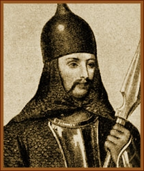

1-10 век.
Образование Древнерусского государства
Предпосылками образования Древнерусского государства стали распад родоплеменных связей и развитие нового способа производства. Древнерусское государство складывалось в процессе развития феодальных отношений, возникновения классовых противоречий и принуждения. Среди славян постепенно формировался господствующий слой, основой которого являлась военная знать киевских князей - дружина. Уже в 9-м в., укрепляя позиции своих князей, дружинники прочно заняли ведущее положение в обществе. Именно в 9-м в. в Восточной Европе сформировались два этнополитических объединения, которые в итоге и стали основой государства. Оно сложилось в результате объединения полян с центром в Киеве. Славяне, кривичи и финноязычные племена объединились в районе озера Ильмень (центр - в г. Новгороде). В середине 9-го в. этим объединением стал править выходец из Скандинавии Рюрик (862-879). Поэтому годом образования Древнерусского государства считается 862 г. Присутствие скандинавов (варягов) на территории Руси подтверждается археологическими раскопками и записями в летописях. В 18-м в. немецкие ученые Г.Ф. Миллер и Г.З. Байер доказывали скандинавскую теорию образования Древнерусского государства (Руси).
М.В. Ломоносов, отрицая норманское (варяжское) происхождение государственности, связывал слово «Русь» с сарматами - роксоланами, рекой Росью, протекающей на юге. Ломоносов, опираясь на «Сказание о князьях владимирских», доказывал, что Рюрик, являясь выходцем из Пруссии, принадлежал к славянам, коими являлись пруссы. Именно эта «южная» антинорманская теория образования Древнерусского государства была поддержана и развита в 19-20-м вв. учеными-историками.
Первые упоминания о Руси засвидетельствованы в «Баварском хронографе» и относятся к периоду 811-821 гг. В нем русские упоминаются как народ в составе хазар, населяющих Восточную Европу. В 9-м в. Русь воспринималась как этнополитическое образование на территории полян и северян. Рюрик, взявший на себя управление Новгородом, послал свою дружину во главе с Аскольдом и Диром править Киевом. Преемник Рюрика, варяжский князь Олег (879-912), завладевший Смоленском и Любечем, подчинил своей власти всех кривичей, в 882 г. обманным путем выманил из Киева и убил Аскольда и Дира. Захватив Киев, он сумел объединить силой своей власти два важнейших центра восточных славян - Киев и Новгород. Олег подчинил себе древлян, северян и радимичей. В 907 г. Олег, собрав огромное войско из славян и финнов, предпринял поход на Царьград (Константинополь), столицу Византийской империи. Русская дружина опустошила окрестности, вынудила греков просить Олега о мире и заплатить огромную дань. Результатом этого похода стали очень выгодные для Руси мирные договоры с Византией, заключенные в 907 и 911 гг. Олег умер в 912 г., и его преемником стал Игорь (912-945), сын Рюрика. В 941 г. он совершил поход на Византию, нарушившую прежний договор. Войско Игоря разграбило берега Малой Азии, но потерпело поражение в морской битве. Тогда в 945 г. в союзе с печенегами князь Игорь предпринимает новый поход на Константинополь и вынуждает греков вновь заключить мирный договор. В 945 г. при попытке собрать повторную дань с древлян Игорь был убит. Вдова Игоря - княгиня Ольга (945-957) - правила государством за малолетством сына Святослава. Она жестоко отомстила за убийство мужа, разорив земли древлян. Ольга упорядочила размеры и места сбора дани. В 955 г. она посетила Константинополь и крестилась в православие.
Святослав (957-972) - самый храбрый и влиятельный из князей, подчинивший своей власти вятичей. В 965 г. он нанес ряд тяжелых поражений хазарам. Святослав победил северокавказские племена, а также волжских болгар и разграбил их столицу - Булгар. Византийское правительство искало с ним союза для борьбы с внешними врагами. Центром образования Древнерусского государства стали Киев и Новгород, вокруг них объединились восточнославянские племена, северные и южные. В 9-м в. обе эти группы сформировали Древнерусское государство, вошедшее в историю как Русь.
Правление Рюрика на Руси
История Руси до Рюрика

Правление Рюрика
Происхождение Рюрика до сих пор вызывает множество споров среди тех, кто считает его реальной исторической личностью. Приверженцы норманской теории утверждают, что Рюрик и его дружина были викингами - скандинавами. Норманисты ищут доказательства своей теории в этимологии имени князя, связывая его с латинским словом rex («король»). Известно, что имя Рюрик и сегодня используется в Швеции, Финляндии и некоторых других странах. Сторонники западнославянской версии связывают биографию Рюрика со славянским племенем ободритов, иначе называвшихся «ререгами» (соколами). Призвание Рюрика, согласно «Повести временных лет», произошло в 862 г. Племена весь, чудь, ильменские словене и кривичи, не сумев договориться о том, кто же будет править, и не желая усобицы, призвали к себе на княжение Рюрика. Он пришел в Новгород с братьями Синеусом и Трувором. Существует версия о том, что правление Рюрика началось не в Новгороде, а в Старой Ладоге. В соответствии с этой теорией Новгород был построен князем только через два года. Такие археологические находки, как Рюриково Городище, способны подтвердить эту теорию.
Согласно летописной версии братья Рюрика стали княжить в славянских землях. Синеус получил Белоозеро, а Трувор - Изборск в землях кривичей. Но правили они недолго. Через два года, после их смерти, Рюрик стал единоличным правителем. Стоит отметить, что некоторые историки придерживаются версии о том, что братьев у Рюрика не было. Они переводят слово «трувор» как «верная дружина», а «синеус» как «свой род». Сведений о правлении Рюрика немного. Летописи довольно скупо сообщают о том, что он стремился укреплять границы своих владений, строил города, а также подавил мятеж Вадима Храброго в Новгороде. Из этого можно заключить, что приход Рюрика на Русь повлек за собой укрепление государственности и централизацию власти. Смерть Рюрика датируется примерно 879 г. Власть унаследовал сын Рюрика (предположительно от норвежской княжны) Игорь, позже ставший киевским князем. Существуют сведения о том, что у Рюрика были и другие дети.
Князь Олег Вещий

Правление князя Олега в Киеве началось с укрепления городских стен и защитных сооружений. Границы Киевской Руси также укреплялись небольшими крепостями («заставами»), где несли постоянную службу дружинники. В 883-885 гг. князь предпринял несколько успешных походов. Были подчинены славянские племена, селившиеся по берегам Днепра, радимичи, жившие на берегах Днестра, Буга, Сожа, древляне и северяне. По приказу Олега в захваченных землях строились города. Покоренные племена были обязаны платить подати. Собственно, вся внутренняя политика Олега, как и других князей того времени, сводилась к сбору податей.
Внешняя политика Олега была успешной. Важнейшим событием стал поход на Византию в 907 г. Князь собрал для этого похода огромное по тем временам войско (по некоторым сведениям, до 80 тыс. человек). Византия, несмотря на оборонительные хитрости греков, была захвачена, пригороды - разграблены. Результатом похода стала богатая дань, а также торговые льготы для русских купцов. Через пять лет мир с Византией был подтвержден заключением письменного договора. Именно после этого похода великий киевский князь Олег, основатель государства Киевская Русь, стал называться Вещим (т.е. чародеем).
Князь Олег, один из величайших правителей Руси, умер в 912 г. Его смерть окутана легендами. По одной из них, наиболее известной, Олег спросил о своей смерти встреченного на дороге волхва. Тот предсказал князю гибель от любимого боевого коня. На этого коня князь никогда больше не садился, но приказал приближенным заботиться о нем. Через много лет Олег пожелал увидеть кости коня, решив, что волхв ошибся. Он наступил на череп, а из него выползла ядовитая змея и ужалила князя. После смерти Олег был похоронен в Киеве. Существует и другая версия гибели князя, согласно которой воинственный Олег погиб в бою.
Биография Олега, ставшего первым князем, жизнь и деяния которого подтверждены летописями, стала источником множества легенд и литературных произведений. Одно из них - «Песнь о Вещем Олеге» - принадлежит перу А.С. Пушкина.
Крещение Руси. От язычества к христианству
Язычество господствовало на Руси до середины 10 в. Основу ментальности язычников-славян составляли идеи вечности и равнозначности добра и зла как двух самостоятельных форм бытия. Их представления неразрывно связывались с природными явлениями. Борьба со «злыми» силами природы вела к вере в возможность объединения сил добра против сил зла. Восточные славяне воспринимали мир на основе парных понятий - благоприятное и враждебное. Космос (порядок) противопоставлялся хаосу (беспорядку). Символом защиты от всего враждебного служил круг. Этой геометрической форме приписывались магические свойства. Славяне носили кольца, цепи, венки, круговым валом обводили жилье. Языческая ментальность пронизывала всю систему культуры восточных славян. Это проявилось в ритуальных плясках, игрищах, жертвоприношениях, специфике ремесленных изделий. Отпечаток языческого видения Вселенной проявляется и в структуре городов. В верхней части города жили лучшие люди, в нижней - простолюдины. Восточными славянами был создан единый пантеон языческих богов: богу-отцу соответствовал Стрибог, богу-сыну - Даждьбог, Богородице - Мокош. Основными божествами считались Перун и крылатый Симаргл (Семаргл), которые являлись посредниками между небом и землей. В условиях многобожия встала необходимость выбора единой веры. Принятия общей для Руси религии требовали интересы единства государства, так как другие страны воспринимали языческую Русь как варварское государство. В «Повести временных лет» имеется подробное описание этого события, в котором принимали участие князья и бояре. Князь Владимир Святославович беседовал с проповедниками многих религий. Веру иудеев князь Владимир отверг по причине потери ими своей земли, а ислам - за строгие ограничения в еде и питье. Владимир предпочел восточное христианство за красоту его храмов и обрядов по византийскому канону, которые произвели на него глубокое впечатление. На окончательный выбор повлияли и давние связи с Византией. Православие в большей степени, чем другие религии, соответствовало культурному типу славян. В отличие от католичества, ориентированного на рациональное познание мира, православие понимало смысл жизни как достижение внутреннего совершенства и единства, коллективное стремление к лучшему будущему и социальной справедливости.

Политический строй Древней Руси
В исторической науке разделились мнения по поводу характера политического строя Древней Руси. Принято считать, что Древняя Русь (9-11-й вв.) - раннефеодальное государство, сохранявшее пережитки родоплеменных отношений. Великие князья постепенно утрачивали черты военных вождей (присущие им в 4-7-м вв.) и, становясь светскими правителями, принимали участие в разработке законов, организации суда, торговли. В обязанности князя входили функции обороны государства, сбора налогов, судопроизводства, организации военных походов, заключения международных договоров. Князь правил при помощи дружины, костяк которой составляла гвардия из наемников (сначала варяги, а в киевский период - кочевники). Отношения между князем и дружинниками носили вассальный характер. Князь считался первым среди равных. Дружинники были на полном содержании и проживали на княжеском дворе. Они подразделялись на старших и младших. Старшие дружинники назывались боярами, из их числа назначались представители высших чинов княжеской администрации. Наиболее приближенные к князю бояре составляли княжеский совет, который принимал важнейшие решения.
К 10-му в. в руках великого князя была сосредоточена вся полнота законодательной, исполнительной, судебной и военной власти. Великий князь был представителем киевской династии, которой принадлежало верховное право на власть. Он правил в Киеве, а его дети и родственники являлись наместниками в подвластных ему землях. После смерти великого князя власть передавалась по старшинству от брата к брату. Это приводило к распрям, так как зачастую великий князь пытался передать власть не брату, а сыну. Во второй половине 11-го в. важнейшие вопросы внутренней и внешней политики решались на княжеских съездах. Постепенно племенные сходки превратились в вечевые собрания. Долгое время их роль была незначительна, но в 9-м в. она резко возросла.
Русь 9-12-го вв. представляла собой федерацию городов-государств во главе с великим киевским князем. Значительную политическую роль играли вечевые собрания, на которых городские жители решали вопросы войны и мира, законодательства, земельного устройства, финансов и др. Руководили ими представители знати. Вечевые собрания, являвшиеся элементом народного самоуправления, свидетельствуют о наличии демократии в Древнерусском государстве. 14 великих киевских князей (из 50) были избраны на вече. По мере укрепления княжеской власти роль последних снижалась. К середине 12-го в. за вече сохранилась лишь функция комплектования народного ополчения.
В Древнерусском государстве не существовало разделения между административным, полицейским, финансовым и другими видами самоуправления. В практике управления государством князья опирались на собственное право. В суде преобладал обвинительный процесс, применяемый как в гражданских, так и в уголовных делах. Каждая из сторон доказывала свою правоту. Главную роль играли показания свидетелей. Князья и их посадники выполняли функции посредников между сторонами, взимая за это плату. Древнерусское законодательство формировалось по мере укрепления государственности. Первый свод законов, дошедший до наших дней, - «Русская Правда», составленная во времена княжения Ярослава Мудрого на основе еще более древнего свода законов. Документ включал в себя свод уголовных и гражданских законов. По гражданским делам «Русская Правда» устанавливала суд двенадцати выборных. Закон не признавал телесных наказаний и пыток, а смертная казнь выносилась в исключительных случаях. Применялась практика денежных штрафов. «Русская Правда» пополнялась новыми статьями во времена правления Ярославичей (вторая половина 11-го в.) и Владимира Мономаха (1113-1125).